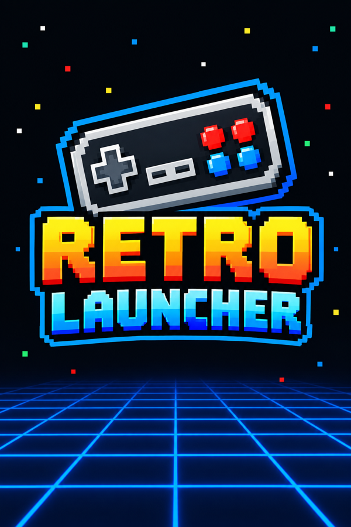

A neon front-end for 21 retro systems that runs right on your pinball cabinet. Browse on the playfield, play on the backglass or playfield, and watch box art, marquees and controls light up the other screens.

An External Application: no firmware changes, no root. Copy it to a USB stick and it shows up in the cabinet's own menu.
Every game plays on the backglass or the playfield, per game or for a whole system. Vertical arcade games go to the playfield by themselves.
Box art on the backglass, the game's logo on the DMD like a marquee, and the controls on the playfield while you play.
Settings > Download artwork fetches covers, logos and bezels for the games you have, and nothing else.
Send games from any computer or phone on your network straight to the cabinet. No more pulling the USB stick.
Each arcade zip is checked against FBNeo and MAME 2003-Plus and played with the emulator it's complete for, sorted into genres.
Save states, an automatic resume point when you quit, disc swapping, core options and high scores.
Presets or press-to-assign button mapping, for one game or a whole system.
Lists which BIOS files your systems can use, whether yours are good dumps, and exactly where each one goes.
Settings > Updates installs a new release in place, replacing only the files that changed.
Emulators built for the cabinet's chip, including GPU-accelerated Dreamcast, N64, Saturn and PSP.
Retro Launcher drives every display in the cabinet at once.
external folder.external folder to the root of your cabinet's USB stick (merge it with one that's already there).external/retro-launcher/roms/<system>/, from a computer or with Settings > Network transfer, then run Settings > Download artwork.Retro Launcher ships no games, no BIOS files and no copyrighted artwork. Use it with games you own. Settings > BIOS check tells you which BIOS files your systems can use and where to put your own.
The basics. The guides go into more detail: installing, adding games, every system, the arcade guide, controls & settings and troubleshooting.
AtGames Legends Pinball 4KP and HDP.
I mean, you can try to play without an Arcade Control Panel, but only a small number of games will work as intended. It was totally meant to be used with an Arcade Control Panel.
No. Retro Launcher is an External Application that runs from the USB stick: no firmware changes, no root. Take the stick out and the cabinet is exactly as it was.
In external/retro-launcher/roms/<system>/ on the USB stick.
.chd. A .cue with its tracks, or one folder per game, works too.Retro Launcher makes the folders itself the first time it runs. Start it once from the cabinet's External Applications menu, then put the USB stick back in your computer. You'll find roms/, saves/ and system/, with a folder for every system, each with a README listing the file types it takes.
You can also make a missing folder yourself. It just needs the system's exact folder name, for example roms/snes, roms/psx or roms/neogeo. The README lists every one.
No, never. Settings > BIOS check lists the BIOS files your systems can use, whether each is required or good to have, and the folder to put your own copy in.
Settings > Download artwork, with the cabinet connected to the internet. It only fetches artwork for the games you have.
Yes: Settings > Network transfer. The cabinet shows an address and a PIN. Open the address in a browser on any computer or phone on your network and drop your games in.
Hold Start for a second, or press Home, for the pause menu: save and load state, reset, core options, change disc and quit. Quitting also saves a resume point, offered the next time you start the game.
Yes. For one game, press Home on it and change Screen. For everything, use Settings > Default game screen. Vertical arcade games go to the playfield by themselves.
Press Home on a game and choose Controls. Pick a preset, or select a button and press the cabinet button you want for it, for that game or the whole system.
Auto-start picks it for you: keypad 1, unless you change it with Home > Start with. In a game, Start is keypad 1, Rewind is *, and Y opens the on-screen keypad for the rest.
It turns the extra screens on or off: the ones not showing the menu or the game. When it's On (the default):
Off leaves those screens alone, so only the screen with the menu or the game is used. The change applies from the next game you start, and to the menu the next time Retro Launcher starts.
In external/retro-launcher/saves/<system>/, together with the save states.
The note under the game says why. Usually it's a missing BIOS or parent zip (such as neogeo.zip), or ROMs from a different version:
Settings > BIOS check lists every zip your arcade games are missing.
Lower the resolution in the pause menu's Core options. PSP, Dreamcast and N64 render above their original resolution by default. Saturn already skips a frame when it falls behind, instead of cutting the sound.
Settings > Updates. Retro Launcher also checks once a day by itself and tells you when a new version is out. Updating never touches your games, saves, settings or artwork.
Open an issue on GitHub and attach external/retro-launcher/data/launcher.log from the USB stick. It records what happened.